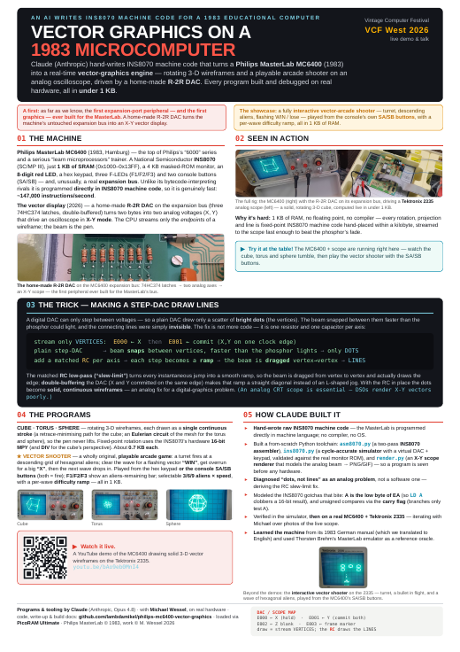
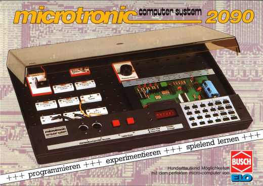
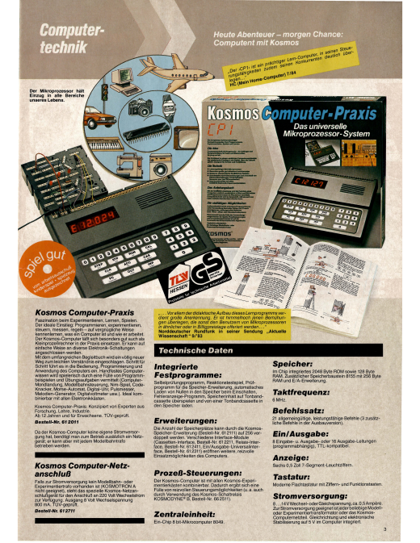
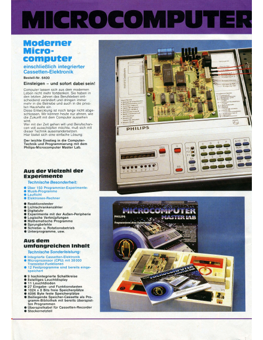

01
Exhibit posters
A3 · click View for the live page, or PDF to print
02
For the kids
US-Letter handout · binary, hex & your first program
03
Original period adverts
Scanned brochures & ads from the machines' heyday

Busch · 1981
Microtronic 2090 Advert
The original German brochure introducing the Busch Microtronic Computer System.


Philips
MasterLab MC6400 Advert
Period advertising for the Philips MasterLab MC6400 electronics lab.